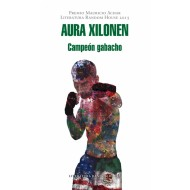

Campeon Gabacho - Premio Mauricio Achar|Literatura Random House 2016
Autor: AURA XILONEN ARROYO
EDITORIAL: LITERATURA RANDOM HOUSE

Autor: AURA XILONEN ARROYO
EDITORIAL: LITERATURA RANDOM HOUSE
Premio Mauricio Achar Literatura Random House 2015 Aura Xilonen, en un "inglenol" que sorprende, narra los problemas sociales, el miedo, la soledad, pero tambien el amor al que los migrantes se enfrentan en un pais del que siempre seran expulsados. Y entonces se me ocurre, mientras los camejanes persiguen a la chivata hermosa para bulearla y chiflarle cosas sucias, que yo puedo alcanzar otra vida al putearme a todos esos foquin meridianos. Al fin, naci muerto y no tengo ni pizca de miedo. Asi habla Liborio. De esa forma piensa. El debe dejar Mexico, esa tierra que no le ha ofrecido nada mas que golpes y el instinto de sobrevivencia, tras un asesinato imprudencial. Cruza, como tantos otros, el Rio Bravo para llegar "a la tierra prometida". Y en un barrio indefinido de cualquier ciudad gringa, este mojado nos cuenta su historia. Gracias a los recuerdos y a la voz de Liborio descubrimos una infancia desnutrida, abandonada, y una juventud en la que ya no importa arriesgar todo. El empieza trabajando en una libreria donde descubre la inutilidad de las palabras; despues conoce a la mujer con la que fantaseara hasta llegar a la obsesion; y finalmente encontrara un camino en el que, tal vez, consiga salvarse: sera un boxeador. La vida de Liborio es deslumbrante por el lenguaje con el que esta hilvanada y el cual demuestra, a su vez, resistencia y fascinacion.
Avisos de privacidad | Condiciones de uso | Politicas
Los precios publicados en esta tienda están sujetos a cambios sin previo aviso y solo son aplicables para ventas en línea.
Algunos títulos están sujetos a disponibilidad.
Todos los Derechos Reservados
Los precios publicados en esta tienda están sujetos a cambios sin previo aviso y solo son aplicables para ventas en línea.
Algunos títulos están sujetos a disponibilidad.
Todos los Derechos Reservados